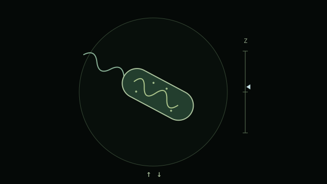
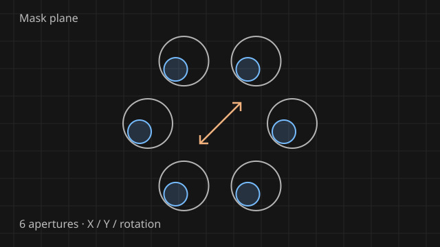
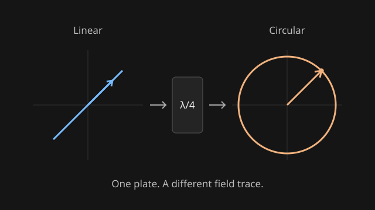
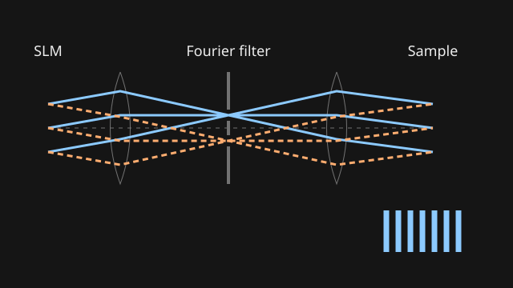
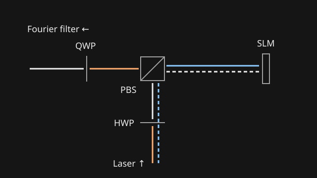

Optics playground.
A small collection of simulations to make the optics easier to see.

Microscope mini-game
Focus Finder
Track a swimming bacterium in depth. Use the arrow keys to keep it sharp for 10 seconds.
Play Focus Finder
Structured illumination
SIM mask alignment
Move the mask, rotate it, and compare which beams clip first in either direction.
Explore alignment
Polarization
Wave plates
See linear and circular polarization transform through quarter- and half-wave plates.
Explore polarization
Microscope optics
From SLM diffraction to sample illumination
Follow diffraction orders through the Fourier filter, relay lenses, and objective to the sample.
Explore the optical path
Polarization
PBS–SLM polarization control
Follow the outgoing and reflected fields, compare pixel states, and adjust the wave plates.
Explore the return path